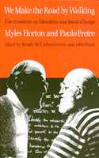

Two pioneers of education discuss their diverse experiences and ideas
Two pioneers of education discuss their diverse experiences and ideas


 Two pioneers of education discuss their diverse experiences and ideas
Two pioneers of education discuss their diverse experiences and ideas

|  |
We Make the Road by WalkingConversations on Education and Social ChangeMyles Horton and Paulo Freire, edited by Brenda Bell, John Gaventa and John Peterspaper EAN: 978-0-87722-775-5 (ISBN: 0-87722-775-6) |
"We Make the Road by Walking is a book of compelling passion, politics, and hope. The dialogue between Horton and Freire opens up new insights into the meaning of pedagogy, social criticism, and collective struggle. This book offers hope by demonstrating in the voices and practices of two of the great educator-activists of the twentieth century the reason for making pedagogy practical and theoretical in the service of social justice."
—Professor Henry A. Giroux, Director, Center for Education and Cultural Studies, Miami University
This dialogue between two of the most prominent thinkers on social change in the twentieth century was certainly a meeting of giants. Throughout their highly personal conversations recorded here, Horton and Freire discuss the nature of social change and empowerment and their individual literacy campaigns. The ideas of these men developed through two very different channels: Horton's, from the Highlander Center, a small, independent residential education center situated outside the formal schooling system and the state; Freire's, from within university and state-sponsored programs.
Myles Horton, who died in January 1990, was a major figure in the civil rights movement and founder of the Highlander Folk School, later the highlander Research and Education Center. Paulo Freire, author of Pedagogy of the Oppressed, established the Popular Culture Movement in Recife, Brazil's poorest region, and later was named head of the New National Literacy Campaign until a military coup forced his exile from Brazil. He has been active in educational development programs worldwide.
For both men, real liberation is achieved through popular participation. The themes they discuss illuminate problems faced by educators and activists around the world who are concerned with linking participatory education to the practice of liberation and social change. How could two men, working in such different social spaces and times, arrive at similar ideas and methods? These conversations answer that question in rich detail and engaging anecdotes, and show that, underlying the philosophy of both, is the idea that theory emanates from practice and that knowledge grows from and is a reflection of social experience.
Excerpt available at www.temple.edu/tempress
"This book is an inspiration.... People interested in learning and social change will find in these pages hope, humor, passion, guidance, and humility. This final conversation between two educator from different continents reveals their common dream of human liberation, their common commitment to love and justice."
—Professor Ira Shor, College of Staten Island, CUNY
"The Myles Horton-Paulo Freire talks represent one of the most important educational conversations of the twentieth century.... This is the first book since Freire's Pedagogy of the Oppressed that I have said must be read."
—Budd L. Hall, Secretary-General, International Council for Adult Education
"An indispensable book for anyone who still believes that ordinary men and women can be helped to learn to take control over their own destinies and to create a humane, democratic, and just society."
—Professor Jack Mezirow, Teachers College, Columbia University
"Horton, the recently deceased founder of the Highland Folk School, and Freire, a Brazilian education leader, were from two different backgrounds, but their shared views on the use of participatory education in bringing about social change are the basis for this thought-provoking, beautifully presented book. Arranged in the form of a written conversation, it provides an intimate view of two men who based their work upon the belief that a good education required three basic elements: love for people, respect for people's abilities to shape their own lives, and the capacity to value others' experiences. This is a book to be read in one sitting, meditated upon, and returned to again for its quiet power and sustenance."
—Library Journal
"In a volume filled with interesting anecdotes, two leaders in education and social activism discuss their literacy campaigns, the nature of social change, and empowerment through education—shedding light on the problems faced by educators and activists who seek to link participatory education with the practice of social change."
—Directions
Preface
Acknowledgments
Editors' Introduction
1. Introduction
"We make the road by walking"
2. Formative Years
"I was always getting in trouble for reading in school" •
"Reading has to be a loving event" •
"I couldn't use all this book learning" •
"I always am in the beginning, as you" •
"Pockets of hope": Literacy and citizenship
3. Ideas
"Without practice there's no knowledge" •
"Is it possible just to teach biology?" •
"I've always been ambivalent about charismatic leaders" •
"The difference between education and organizing" •
"My expertise is in knowing not to be an expert" •
"My respect for the soul of the culture" •
"I learned a lot from being a father"
4. Educational Practice
"The more the people become themselves, the better the democracy" •
"Highlander is a weaving of many colors" •
"Conflicts are the midwife of consciousness"
5. Education and Social Change
"You have to bootleg education" •
"The people begin to get their history into their hands, and then the role of education changes"
6. Reflections
"Peaks and valleys and hills and hollers" •
"It's necessary to laugh with the people"
Epilogue
Index
Brenda Bell is administrator of a regional volunteer organization and a consultant and a member of the Advisory Board for the Center for Literacy Studies at the University of Tennessee.
John Gaventa is Director of the Highlander Research and Education Center and Assistant Professor of Sociology at the University of Tennessee. He co-edited (with Barbara Ellen Smith and Alex Willingham) Communities in Economic Crisis: Appalachia and the South (Temple).
John Peters is Professor of Adult Education at the University of Tennessee.
© 2015 Temple University. All Rights Reserved. This page: http://www.temple.edu/tempress/titles/804_reg.html.